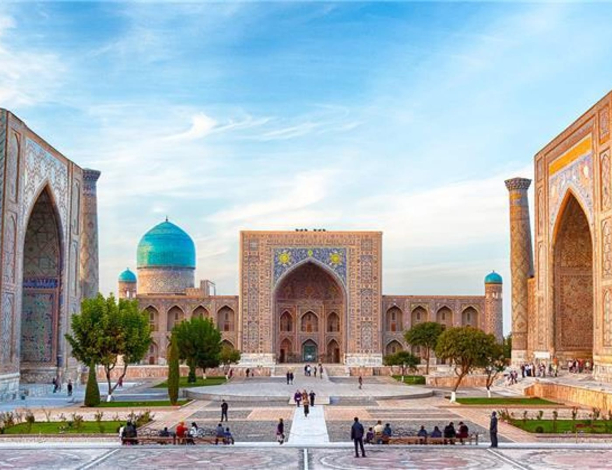

Schachrisabz liegt 160 Kilometer von Samarkand entfernt. Die grüne Stadt, wie der Name übersetzt lautet, ist die Geburtsstadt Timurs. In seiner Zeit war sie als Kesch oder Quix bekannt. Timur wurde in der Nähe der Stadt geboren und hat sie als Sitz seines Sommerpalastes Oq Saray auserkoren. Die Stadt hat heute 65.000 Einwohner. Besonders auf dem zentralen Platz vor den Ruinen das großen Palastes herrscht immer ein reges Treiben. Den besten Blick über die Stadt hat man von Riesenrad, daß sich hinter den Palastruinen befindet.

Ak Saray
Nur die Ruinen des Portaleinganges sind vom Sommerpalast Timurs
erhalten geblieben. Die Übersetzung „Weißer Palast“ ist leicht
irreführend, denn er war himmelblau. Die bezeichnung Oq wurde hier
nicht in direkter Bedeutung, sondern übertragen genutzt und so
beduetet es dann „erhaben“, „aristokratisch“.

Dorus Siyodat
Ostlich der Kok Gumbaz Moschee liegt der Mausoleums komplex Dor-us
Siyodat, der die verfallende Grabstatte von Jahangir, Timurs
altestem und liebstem Sohn, enthalt. Dieser wurde im Jahre 1375 im
Alter von 22 Jahren getotet, als er von seinem Pferd fiel.
Amir Timurs Gruft
Hinter dem Mausoleum Dorus Siadat liegt die Gruft von Amir Timur,
die jedoch nie als Grabstätte diente. Die Gruft wurde 1943
entdeckt, als ein Fußball spielendes Kind durch den Boden in die
Gruft einbrach. Der Raum ist fast vollständig von einem einzigen
Steinsarg erfüllt. Auf diesem wurden Schriftzeichen über das Leben
Amir Timurs gefunden, weshalb man glaubt, dass die Gruft für ihn
bestimmt war.

Kok Gumbaz Moschee
Die blaue Kuppel der Kok Gumbaz Moschee aus den Jahren 1435/36
fällt sofort durch ihre blaue Kuppel auf. Sie wurde von Timurs
Enkel Ulugbek zu Ehren seines Vaters Shah Rukh gebaut, der Timurs
Sohn war. Sie ist das Herzstück der Medrese Dorut Tilovat. Direkt
unterhalb der Kuppel finden sich Schriftzeichen aus dem Koran, die
einen Großteil der Kok Gumbaz einnehmen. Das Innere der Kuppel
wurde restauriert, um das ursprüngliche Dekor zu zeigen.